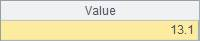

10. Average Residence Time of Certain Types of Commodities in the Supermarket before Being Sold Out
l Problem
The tables below are some tables from simplified supermarket stock control system. To investigate the sales status in a supermarket, it is required to compute the average time before the ¡°Fresh¡± type commodities are sold. The related tables are given as below:
The following commodity table records the detailed information of commodities.

The purchase table has the purchase records of each piece of commodity. The supermarket replenishes its stock at 5 a.m. every day.

The third table is a detailed sales table of the supermarket.

l Tip
General steps: First, decide the way to work out the ¡°average residence time before being sold¡±. The supermarket cannot make a separate record for every piece of commodity, so counting the residence time of every piece of commodity individually cannot work out. According to mathematical conversion, it is known that the ¡°average residence time¡± is the difference between the average sold-out time and the average purchase time. The problem can be solved by this algorithm. As long as the purchase and sold-out records of the specified item has been filtered, it will be much easier tocompute the time average.
1. Replace the Commodity field in the purchase table and sales table with corresponding records of the commodity table.
2. Filter out the purchase records by category Fresh.
3. Filter out the sales record by category Fresh.
4. Count the total purchase volume.
5. The start point should be the beginning of the month. Work out the time difference between every purchase time and the start point, multiply it with the purchase volume and sum up the results.
6. Count the total sales volume.
7. The start point should be the beginning of the month. Work out the time difference of the every sales time and the start point, multiply it with the sales volume, and sum up the results.
8. For the remaining commodities (the unsold commodities), set their ¡°sales time¡± as the end of the month.
9. The average sales time minus the average purchase time is the average residence time.
10. Finally, adjust the result format, convert the time unit to ¡°days¡±, and round off the decimal number to get the result.
l Code
|
|
A |
|
|
1 |
=file("C:\\txt\\Stock.txt").import@t().select(month(Datetime)==6). derive() |
Stock table of June |
|
2 |
=file("C:\\txt\\Sale.txt").import@t().select(month(Datetime)==6). derive() |
Sales table of June |
|
3 |
=file("C:\\txt\\Commodity.txt").import@t() |
Commodity list |
|
4 |
Fresh |
Specified category |
|
5 |
>A1.keys(Commodity), A2.keys(Commodity), A3.keys(ID) |
Set the primary key of the 3 tables |
|
6 |
>A1.switch(Commodity,A3), A2.switch(Commodity,A3) |
Update the fields of Commodity in the purchase table and sales table with corresponding records of the commodity list. |
|
7 |
=A1.select(Commodity.Category==A4) |
Filter out the purchase record of specified category |
|
8 |
=A2.select(Commodity.Category==A4) |
Filter out the sales record of specified category |
|
9 |
=A7.sum(Volume) |
Sum up the total purchase volume. |
|
10 |
=A7.sum(long(interval@s("2009-6-1 00:00:00",Datetime)*Volume)) |
Work out the total time difference between purchase time and starting point. The starting point is the beginning of the month. |
|
11 |
=A8.sum(Volume) |
Sum up the total sales value. |
|
12 |
=A8.sum(long(interval@s("2009-6-1 00:00:00",Datetime)*Volume)) |
Work out the total time differences between sales time point and start time point. The start time point should be the beginning of the month. |
|
13 |
=long((A9-A11)*interval@s("2009-6-1 00:00:00","2009-7-1 00:00:00")) |
For the remaining commodities, the ¡°sales time¡± can be set as the end of the month. |
|
14 |
=(A12+A13)/A9-A10/A9 |
The average sales time minus the average purchase time is the average residence time. |
|
15 |
=floor(A14/60/60/24,1) |
Change the unit of time to days and reject excessive decimal numbers for easier viewing. |
l Result
